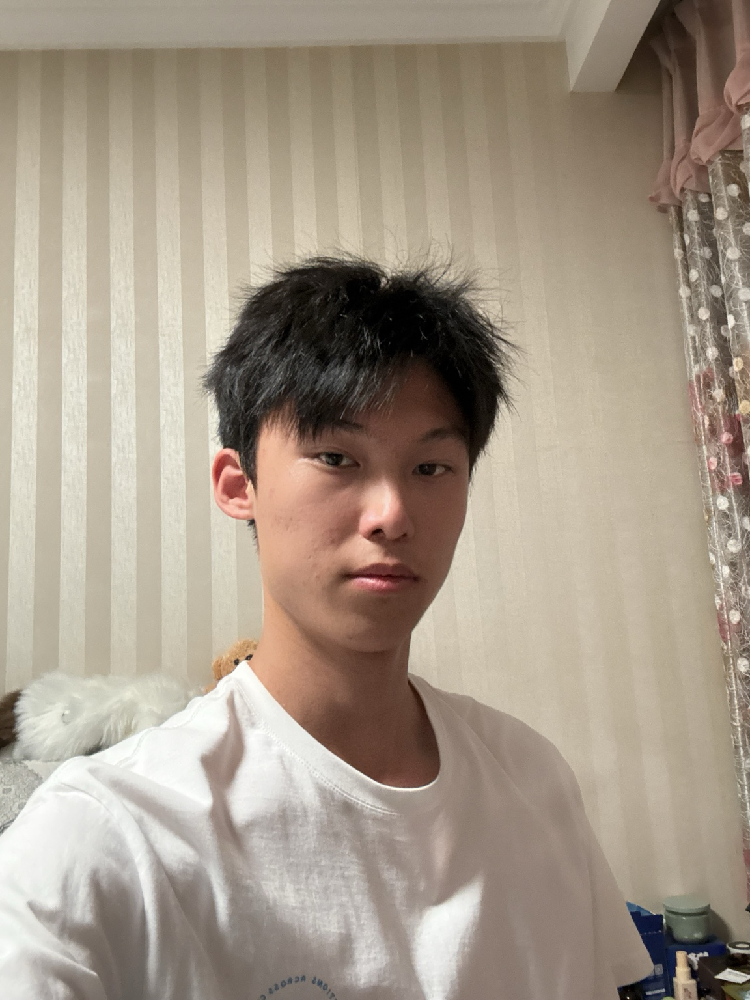

COMPSCI 201 · Introduction to Programming and Data Structures
Teaching assistant. I lead Java recitations, prepare annotated lab solutions, and hold office hours.
Duke Kunshan University · hy267@duke.edu · haohongyu.github.io
于昊弘
I’m an undergraduate at Duke Kunshan University studying applied mathematics. I’m interested in analysis and geometry, how mathematics connects with computer science and AI, and how visualization can make a proof easier to follow.

With AI assistance, I drafted a proof extending the four-row outcome classification to Young diagrams with any finite number of rows.
The draft encodes each diagram as a boundary string and uses strong induction to derive an explicit criterion for losing positions. It also shows that every losing position has even Dyson rank.
I’m studying Stein and Shakarchi’s Fourier Analysis: An Introduction and preparing English-language videos that explain the motivations behind its definitions and proofs.
I am scripting Episode 0 and designing its animations in Manim with AI assistance. I check that each animation represents the mathematical argument it accompanies.
Research files will appear here when they’re published.
{% endif %}Teaching assistant. I lead Java recitations, prepare annotated lab solutions, and hold office hours.
Duke Kunshan University · 2025–2029 (expected)
Applied Mathematics and Computational Sciences, Mathematics track
Python, Java, Manim
Chinese and English